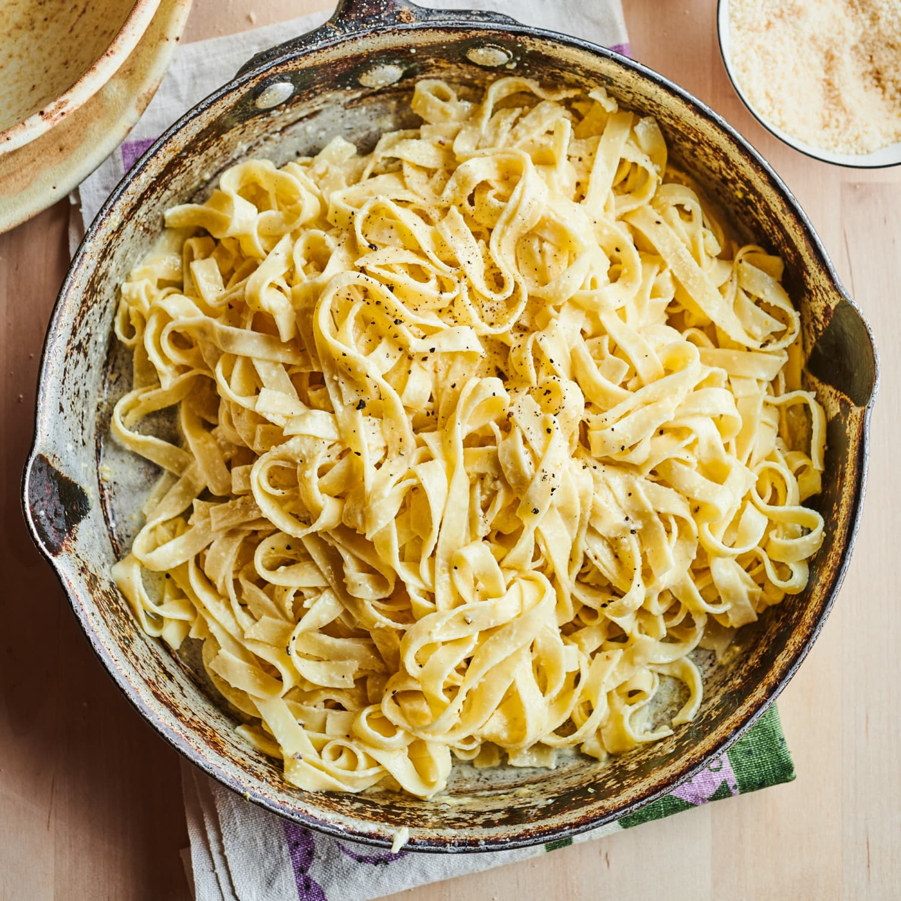

Pasta

Description
Here's a fresh pasta recipe that is virtually foolproof for when you can't find frozen pasta sheets or prefer to make your own. Herbs and spices compatible with the dish can be kneaded into the dough toward the end. This recipe makes 1 1/2 pounds of pasta.
Ingredients
- 6 cups all-purpose flour
- 6 large eggs
Steps
- Heap flour and make a well in it on a clean work surface. Break eggs into the middle of the well. Beat eggs with a fork. Stir eggs into the flour from the bottom of the well with the fork until the dough in the center is smooth or shiny.
- With your hands, gradually incorporate the flour from the outside of the well toward the center, kneading gently until the mass of dough comes together. Knead the dough until it is smooth and resilient. You may need to add more flour, or you may not be able to incorporate all of the flour, depending on the humidity and the size of the eggs. If the dough is sticky or extremely pliable, knead more flour into it.
- Divide the dough into three portions, cover with plastic wrap or an overturned bowl, and allow to rest for at least 30 minutes.
- Roll the dough out very thin on a lightly floured surface, one portion at a time. If you have a pasta machine, follow the manufacturer's instructions for rolling out the dough into sheets about 1 millimeter thick. Use as desired.